01 · 网络分析
上海市冷岛网络演变
十年间城市的冷源与廊道怎么变，变化来自源地还是阻力面，修复该先落在哪一段。
地理信息科学本科生。关心城市冷岛网络、遥感反演与专题制图—— 以及所有「一件事为什么发生在那个位置」的问题。

已经做过的、正在做的，以及接下来几步。做完一步就把状态往前挪一格。
从点评与 POI 出发，把「采集 → 清洗 → 地点归属 → 主题分类 → 情感 → 建模」拆成 13 个可单独运行的步骤， 规则分类留作可解释基线，模型用来接住长尾表达。
NLP × 空间定下骨架：三期影像、三套阻力面、三类瓶颈指标，再用 2×2 析因分解把网络的变化拆成 「源地效应 / 阻力效应 / 交互项」。想回答的是十年间怎么变、为什么变、先修哪里。
网络分析 · 遥感三个研究仓库与个人主页上线：只公开项目说明与代码，论文原文、图件与原始数据保留在本地。
工程 · Git影像与土地覆被入库，做地表温度、植被与水体指数反演，先把「冷源在哪里」落成一张可靠的栅格。
in progress只公开项目说明与代码；论文原文、图件与原始数据不公开。
十年间城市的冷源与廊道怎么变，变化来自源地还是阻力面，修复该先落在哪一段。
同一个古镇的两道门，游客的体验差在哪里，又由哪些维度驱动。
从影像到图件，能自己走完整条链路。
欢迎聊热岛、冷岛网络、气候制图，或者任何带位置的问题。